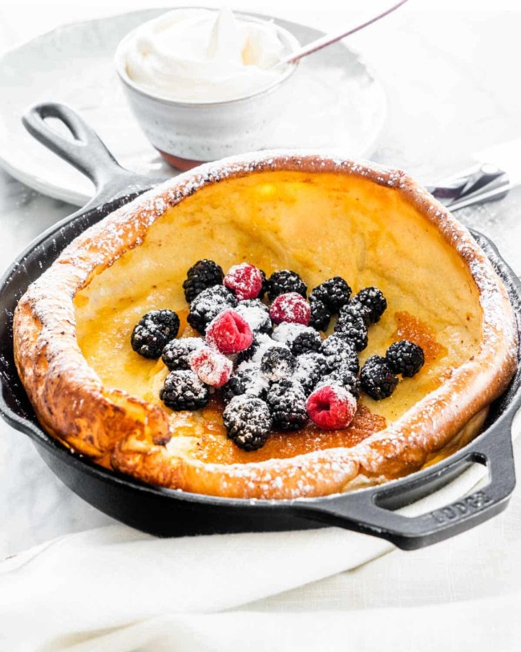

Dutch Baby Recipe Page

Description
This is a tried and true recipe by the Reissen Family.
It has become a weekend tradition, because my kids love it so much.
When I was a kid we would make this every weekend I have a sleepover with my cousins, and it turned out to be pretty much the only recipe I remember how to make.
There are a fcouple tips and tricks to remember when making this recipe.
first, for a poofier pancake you need to let the blended ingredients reach room temp.
If you bake them right after blending, when the ingredients are still cold, you will end up with a less puffy end product.
Honestly I like them less puffy, but to each his own.
The only other important one is when you melt the butter in the pan, make sure the pan is hot first, and do not leave it in the oven.
Ingredients
- 6 Eggs
- 1 Cup Milk (any kind will do)
- 1 Cup White Flour
- 1 Tbsp Salt(not needed, but my familyy prefers it)
- 1/2 Stick of Butter
- 1 Cap Full of Vanilla Extract (not needed, but my family prefers it)
Steps
- preheat the oven to 400 deg F with glass pan or cast iron skillet inside.
- add eggs, milk and flour to blender.
- add salt and vanilla extract to blender if you want them.
- blend ingredients
- if you want a puffier pankcake let ingredients warm up to room temp prior to cooking.
- melt butter in pan, be careful not to let it burn.
- make sure entirety of pan is coated with melted butter.
- pour ingredients into pan and place in oven.
- set timer for 20 min.
- after timer has gone off, take pancake out of oven and sprinkly salt on it prior to serving.